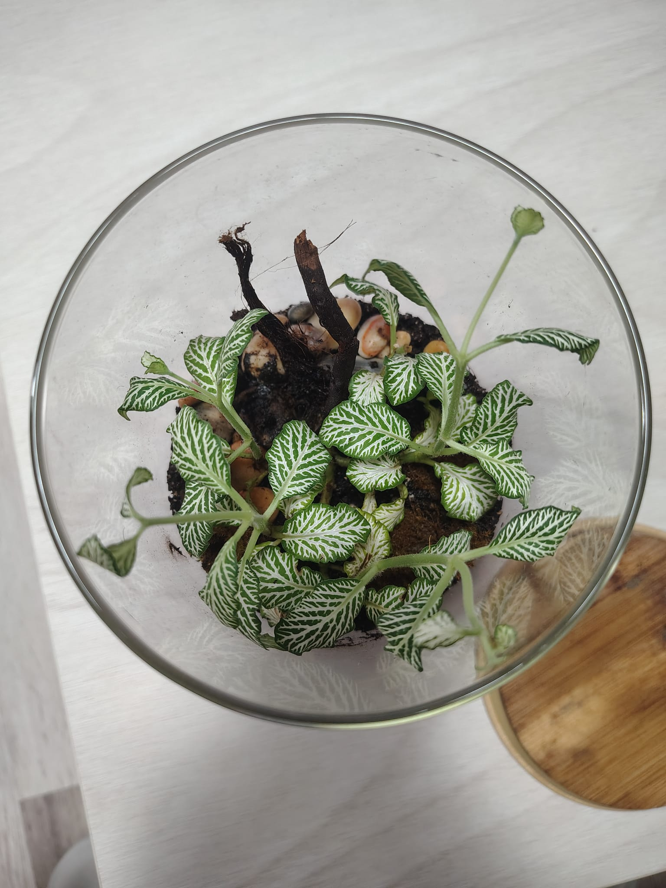

Lo principal antes de ensuciarnos las manos es tener bien claro el tamaño del tarro de cristal que vas a usar. Una vez tienes la urna elegida, toca reunir a los protagonistas y preparar el terreno.
1. Las plantas ideales para empezar
Desde mi experiencia, unas de las plantas más bonitas, fáciles de trasplantar y que menos mantenimiento requieren son las Fittonias (cualquiera de sus variedades). Son plantas con un porte muy bajito cuando son jóvenes, pero van tomando altura a medida que crecen. Además, son súper accesibles por su bajo precio y las encuentras en cualquier vivero o bazar.

Fittonia de tonos rojizos en uno de mis proyectos. Fíjate en cómo destacan sus nervaduras.
También es muy recomendable añadir musgo a tu terrario. No solo queda precioso visualmente, sino que ayuda muchísimo a mantener y regular la humedad del suelo gracias a sus características naturales.
2. Los materiales y el sustrato
Para montar el ecosistema completo, esto es lo que vas a necesitar comprar o buscar por casa:
- Para el drenaje: Piedrecillas pequeñas (grava) y, si puedes darte el lujo, un poco de carbón activo.
- La malla separadora: Yo uso trozos de camisetas viejas 100% sintéticas. Si no tienes, sirve la típica red de supermercado en la que vienen las patatas o cebollas, o un trozo de mosquitera. Solo necesitas algo que deje pasar el agua, pero no la tierra.
- La tierra (El "mejunje"): Huye del sustrato universal a secas. La mezcla ideal es 50% de sustrato universal, 30% de fibra de coco y 20% de arena de río.
3. El montaje: Capa a capa
La zona de drenaje: Lo primero es crear una zona donde se filtre el exceso de agua para que las raíces no se pudran. Echa entre 2 y 4 cm de las piedras pequeñitas en el fondo del cristal. Asegúrate de que la superficie de las piedras quede lo más homogénea y plana posible para embellecer el terrario desde fuera.
La barrera: Coloca tu malla separadora (el trozo de camiseta o la red de patatas) justo encima de las piedras. Esto impedirá que el sustrato que pongamos encima se cuele entre la grava y arruine el drenaje.

Aquí puedes ver perfectamente la separación: abajo la grava para el agua, y encima la tierra oscura.
Preparando la tierra: Ahora viene la parte más "plasta", porque mancha mucho y tardas lo tuyo. En un bol grande, echa los tres tipos de sustrato en los porcentajes que vimos antes. Añade un poco de agua (sin pasarse para no hacer un barrizal) y mézclalo todo hasta que quede un buen mejunje húmedo.
Ve echando esta mezcla poco a poco en el terrario hasta tener unos 5 o 7 cm de tierra. No la aplastes. No queremos que se compacte, solo que quede uniforme por la parte de arriba.
4. El trasplante y el toque final
Saca con mucho cuidado tu Fittonia de la maceta en la que venga. Tienes que quitarle la tierra de las raíces muy suavemente mientras la lavas con agua, por ejemplo, en el fregadero.
Cuando tengas las raíces bien limpias, haz un agujero en la tierra del terrario con el dedo, lo suficientemente profundo para que la planta quepa bien. Introdúcela, asegúrate de que se asienta correctamente y listo.

Vista desde arriba. Asegúrate de dejar espacio para que la planta respire y crezca.
Ahora toca darle con el "flus flus" (un pulverizador de agua) a todo el interior durante 1 o 2 minutos. Esto ayuda a que todo coja humedad y hace que el trasplante sea menos estresante para la planta. Tras esto, ya puedes decorar el interior a tu gusto y colocar el musgo (al que le vendrá bien otra pasada rápida de flus flus).
Si estás pensando en meter pequeños invertebrados (isópodos), mi mayor consejo es que esperes aproximadamente un mes. Necesitas asegurarte de que tanto el musgo como las plantas principales estén bien enraizadas.
Una vez pase el mes, puedes introducirlos. Eso sí, si tu terrario es pequeño, no eches más de 2 o 3. Comen a una velocidad bestial. Tendrás que ir metiéndoles trocitos de hojas secas de la calle o piel de manzana para evitar que acaben comiéndose tus plantas vivas.